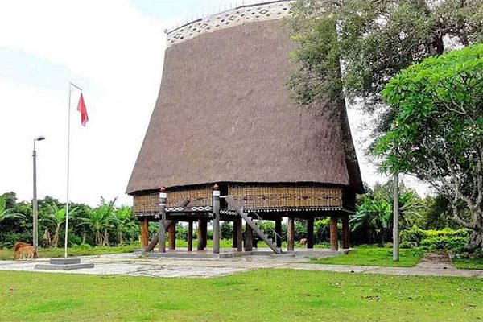
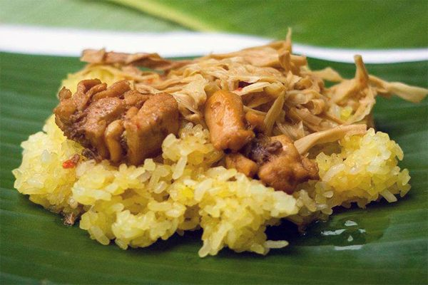

<!DOCTYPE html><html lang="vi">
<!-- Mirrored from dulichviet.net.vn/kinh-nghiem-du-lich-kon-tum-day-du-moi-nhat.html by HTTrack Website Copier/3.x [XR&CO'2014], Sun, 02 Mar 2025 05:30:34 GMT -->
<!-- Added by HTTrack --><meta http-equiv="content-type" content="text/html;charset=UTF-8" /><!-- /Added by HTTrack -->
<head><meta name="google-site-verification" content="fZck7yi0DEHAVAzogT2OJpOi42K_hG1ge0sfFCoZGrA" /> <script data-ad-client="ca-pub-4311305112867562" async src="../pagead2.googlesyndication.com/pagead/js/f.txt"></script> <meta name="google-site-verification" content="fZck7yi0DEHAVAzogT2OJpOi42K_hG1ge0sfFCoZGrA" /><meta charset="utf-8"><link data-optimized="2" rel="stylesheet" href="wp-content/litespeed/css/e993ff43c126cf9a0156e6964b39385349e8.css?ver=4dd17" /><meta http-equiv="X-UA-Compatible" content="IE=edge"><meta name="viewport" content="width=device-width, initial-scale=1">
<!--[if lt IE 9]> <script src="https://oss.maxcdn.com/libs/html5shiv/3.7.2/html5shiv.min.js"></script> <script src="https://oss.maxcdn.com/libs/respond.js/1.4.2/respond.min.js"></script> <![endif]--><style>#wpadminbar #wp-admin-bar-p404_free_top_button .ab-icon:before {
            content: "\f103";
            color:red;
            top: 2px;
        }</style><meta name='robots' content='index, follow, max-image-preview:large, max-snippet:-1, max-video-preview:-1' /><title>Du Lịch Kon Tum - Kinh Nghiệm Du Lịch Kon Tum Đầy Đủ Mới Nhất</title><meta name="description" content="Nói về du lịch Tây Nguyên hùng vĩ ngoài Đà Lạt và Buôn Ma Thuột ra du lịch Kon Tum là địa điểm đáng để trải nghiệm. Kon Tum có nhiều thắng cảnh đẹp hoang sơ" /><link rel="canonical" href="kinh-nghiem-du-lich-kon-tum-day-du-moi-nhat.html" /><meta property="og:locale" content="vi_VN" /><meta property="og:type" content="article" /><meta property="og:title" content="Du Lịch Kon Tum - Kinh Nghiệm Du Lịch Kon Tum Đầy Đủ Mới Nhất" /><meta property="og:description" content="Nói về du lịch Tây Nguyên hùng vĩ ngoài Đà Lạt và Buôn Ma Thuột ra du lịch Kon Tum là địa điểm đáng để trải nghiệm. Kon Tum có nhiều thắng cảnh đẹp hoang sơ" /><meta property="og:url" content="https://dulichviet.net.vn/kinh-nghiem-du-lich-kon-tum-day-du-moi-nhat.html" /><meta property="og:site_name" content="Website Bán Tour Du Lịch Hàng Đầu Việt Nam" /><meta property="article:publisher" content="https://www.facebook.com/dulichviet.net.vn" /><meta property="article:published_time" content="2019-07-18T06:47:09+00:00" /><meta property="og:image" content="https://dulichviet.net.vn/wp-content/uploads/2019/07/du-lich-kon-tum.jpg" /><meta property="og:image:width" content="600" /><meta property="og:image:height" content="400" /><meta property="og:image:type" content="image/jpeg" /><meta name="author" content="Administrator" /><meta name="twitter:card" content="summary_large_image" /><meta name="twitter:creator" content="@Dulichviet1" /><meta name="twitter:site" content="@Dulichviet1" /><meta name="twitter:label1" content="Được viết bởi" /><meta name="twitter:data1" content="Administrator" /><meta name="twitter:label2" content="Ước tính thời gian đọc" /><meta name="twitter:data2" content="21 phút" /> <script type="application/ld+json" class="yoast-schema-graph">{"@context":"https://schema.org","@graph":[{"@type":"Article","@id":"https://dulichviet.net.vn/kinh-nghiem-du-lich-kon-tum-day-du-moi-nhat.html#article","isPartOf":{"@id":"https://dulichviet.net.vn/kinh-nghiem-du-lich-kon-tum-day-du-moi-nhat.html"},"author":{"name":"Administrator","@id":"https://dulichviet.net.vn/#/schema/person/6675dbce3d0e845983c2c2fc181e96d3"},"headline":"Kinh Nghiệm Du Lịch Kon Tum Đầy Đủ Mới Nhất","datePublished":"2019-07-18T06:47:09+00:00","dateModified":"2019-07-18T06:47:09+00:00","mainEntityOfPage":{"@id":"https://dulichviet.net.vn/kinh-nghiem-du-lich-kon-tum-day-du-moi-nhat.html"},"wordCount":4177,"commentCount":0,"publisher":{"@id":"https://dulichviet.net.vn/#organization"},"image":{"@id":"https://dulichviet.net.vn/kinh-nghiem-du-lich-kon-tum-day-du-moi-nhat.html#primaryimage"},"thumbnailUrl":"https://dulichviet.net.vn/wp-content/uploads/2019/07/du-lich-kon-tum.jpg","keywords":["đặc sản kon tum","địa điểm du lịch kon tum","khách sạn kon tum"],"articleSection":["Cẩm nang du lịch"],"inLanguage":"vi","potentialAction":[{"@type":"CommentAction","name":"Comment","target":["https://dulichviet.net.vn/kinh-nghiem-du-lich-kon-tum-day-du-moi-nhat.html#respond"]}]},{"@type":"WebPage","@id":"https://dulichviet.net.vn/kinh-nghiem-du-lich-kon-tum-day-du-moi-nhat.html","url":"https://dulichviet.net.vn/kinh-nghiem-du-lich-kon-tum-day-du-moi-nhat.html","name":"Du Lịch Kon Tum - Kinh Nghiệm Du Lịch Kon Tum Đầy Đủ Mới Nhất","isPartOf":{"@id":"https://dulichviet.net.vn/#website"},"primaryImageOfPage":{"@id":"https://dulichviet.net.vn/kinh-nghiem-du-lich-kon-tum-day-du-moi-nhat.html#primaryimage"},"image":{"@id":"https://dulichviet.net.vn/kinh-nghiem-du-lich-kon-tum-day-du-moi-nhat.html#primaryimage"},"thumbnailUrl":"https://dulichviet.net.vn/wp-content/uploads/2019/07/du-lich-kon-tum.jpg","datePublished":"2019-07-18T06:47:09+00:00","dateModified":"2019-07-18T06:47:09+00:00","description":"Nói về du lịch Tây Nguyên hùng vĩ ngoài Đà Lạt và Buôn Ma Thuột ra du lịch Kon Tum là địa điểm đáng để trải nghiệm. Kon Tum có nhiều thắng cảnh đẹp hoang sơ","breadcrumb":{"@id":"https://dulichviet.net.vn/kinh-nghiem-du-lich-kon-tum-day-du-moi-nhat.html#breadcrumb"},"inLanguage":"vi","potentialAction":[{"@type":"ReadAction","target":["https://dulichviet.net.vn/kinh-nghiem-du-lich-kon-tum-day-du-moi-nhat.html"]}]},{"@type":"ImageObject","inLanguage":"vi","@id":"https://dulichviet.net.vn/kinh-nghiem-du-lich-kon-tum-day-du-moi-nhat.html#primaryimage","url":"https://dulichviet.net.vn/wp-content/uploads/2019/07/du-lich-kon-tum.jpg","contentUrl":"https://dulichviet.net.vn/wp-content/uploads/2019/07/du-lich-kon-tum.jpg","width":600,"height":400,"caption":"du lịch kon tum"},{"@type":"BreadcrumbList","@id":"https://dulichviet.net.vn/kinh-nghiem-du-lich-kon-tum-day-du-moi-nhat.html#breadcrumb","itemListElement":[{"@type":"ListItem","position":1,"name":"Trang chủ","item":"https://dulichviet.net.vn/"},{"@type":"ListItem","position":2,"name":"Cẩm nang du lịch","item":"https://dulichviet.net.vn/cam-nang-du-lich"},{"@type":"ListItem","position":3,"name":"Kinh Nghiệm Du Lịch Kon Tum Đầy Đủ Mới Nhất"}]},{"@type":"WebSite","@id":"https://dulichviet.net.vn/#website","url":"https://dulichviet.net.vn/","name":"Website Bán Tour Du Lịch Hàng Đầu Việt Nam","description":"Du Lịch Việt","publisher":{"@id":"https://dulichviet.net.vn/#organization"},"potentialAction":[{"@type":"SearchAction","target":{"@type":"EntryPoint","urlTemplate":"https://dulichviet.net.vn/?s={search_term_string}"},"query-input":"required name=search_term_string"}],"inLanguage":"vi"},{"@type":"Organization","@id":"https://dulichviet.net.vn/#organization","name":"Du Lịch Việt","url":"https://dulichviet.net.vn/","logo":{"@type":"ImageObject","inLanguage":"vi","@id":"https://dulichviet.net.vn/#/schema/logo/image/","url":"https://dulichviet.net.vn/wp-content/uploads/2019/08/du-lich-viet.jpg","contentUrl":"https://dulichviet.net.vn/wp-content/uploads/2019/08/du-lich-viet.jpg","width":500,"height":400,"caption":"Du Lịch Việt"},"image":{"@id":"https://dulichviet.net.vn/#/schema/logo/image/"},"sameAs":["https://www.facebook.com/dulichviet.net.vn","https://x.com/Dulichviet1"]},{"@type":"Person","@id":"https://dulichviet.net.vn/#/schema/person/6675dbce3d0e845983c2c2fc181e96d3","name":"Administrator","image":{"@type":"ImageObject","inLanguage":"vi","@id":"https://dulichviet.net.vn/#/schema/person/image/","url":"https://secure.gravatar.com/avatar/46e63f093bf50ece2ac5d3343295bb57?s=96&d=mm&r=g","contentUrl":"https://secure.gravatar.com/avatar/46e63f093bf50ece2ac5d3343295bb57?s=96&d=mm&r=g","caption":"Administrator"},"sameAs":["https://dulichviet.net.vn/"],"url":"https://dulichviet.net.vn/author/dulichviet"}]}</script> <link rel='dns-prefetch' href='http://www.googletagmanager.com/' /><link rel='preconnect' href='http://www.google-analytics.com/' /><style id='classic-theme-styles-inline-css' type='text/css'>/*! This file is auto-generated */
.wp-block-button__link{color:#fff;background-color:#32373c;border-radius:9999px;box-shadow:none;text-decoration:none;padding:calc(.667em + 2px) calc(1.333em + 2px);font-size:1.125em}.wp-block-file__button{background:#32373c;color:#fff;text-decoration:none}</style><style id='global-styles-inline-css' type='text/css'>body{--wp--preset--color--black: #000000;--wp--preset--color--cyan-bluish-gray: #abb8c3;--wp--preset--color--white: #ffffff;--wp--preset--color--pale-pink: #f78da7;--wp--preset--color--vivid-red: #cf2e2e;--wp--preset--color--luminous-vivid-orange: #ff6900;--wp--preset--color--luminous-vivid-amber: #fcb900;--wp--preset--color--light-green-cyan: #7bdcb5;--wp--preset--color--vivid-green-cyan: #00d084;--wp--preset--color--pale-cyan-blue: #8ed1fc;--wp--preset--color--vivid-cyan-blue: #0693e3;--wp--preset--color--vivid-purple: #9b51e0;--wp--preset--gradient--vivid-cyan-blue-to-vivid-purple: linear-gradient(135deg,rgba(6,147,227,1) 0%,rgb(155,81,224) 100%);--wp--preset--gradient--light-green-cyan-to-vivid-green-cyan: linear-gradient(135deg,rgb(122,220,180) 0%,rgb(0,208,130) 100%);--wp--preset--gradient--luminous-vivid-amber-to-luminous-vivid-orange: linear-gradient(135deg,rgba(252,185,0,1) 0%,rgba(255,105,0,1) 100%);--wp--preset--gradient--luminous-vivid-orange-to-vivid-red: linear-gradient(135deg,rgba(255,105,0,1) 0%,rgb(207,46,46) 100%);--wp--preset--gradient--very-light-gray-to-cyan-bluish-gray: linear-gradient(135deg,rgb(238,238,238) 0%,rgb(169,184,195) 100%);--wp--preset--gradient--cool-to-warm-spectrum: linear-gradient(135deg,rgb(74,234,220) 0%,rgb(151,120,209) 20%,rgb(207,42,186) 40%,rgb(238,44,130) 60%,rgb(251,105,98) 80%,rgb(254,248,76) 100%);--wp--preset--gradient--blush-light-purple: linear-gradient(135deg,rgb(255,206,236) 0%,rgb(152,150,240) 100%);--wp--preset--gradient--blush-bordeaux: linear-gradient(135deg,rgb(254,205,165) 0%,rgb(254,45,45) 50%,rgb(107,0,62) 100%);--wp--preset--gradient--luminous-dusk: linear-gradient(135deg,rgb(255,203,112) 0%,rgb(199,81,192) 50%,rgb(65,88,208) 100%);--wp--preset--gradient--pale-ocean: linear-gradient(135deg,rgb(255,245,203) 0%,rgb(182,227,212) 50%,rgb(51,167,181) 100%);--wp--preset--gradient--electric-grass: linear-gradient(135deg,rgb(202,248,128) 0%,rgb(113,206,126) 100%);--wp--preset--gradient--midnight: linear-gradient(135deg,rgb(2,3,129) 0%,rgb(40,116,252) 100%);--wp--preset--font-size--small: 13px;--wp--preset--font-size--medium: 20px;--wp--preset--font-size--large: 36px;--wp--preset--font-size--x-large: 42px;--wp--preset--spacing--20: 0.44rem;--wp--preset--spacing--30: 0.67rem;--wp--preset--spacing--40: 1rem;--wp--preset--spacing--50: 1.5rem;--wp--preset--spacing--60: 2.25rem;--wp--preset--spacing--70: 3.38rem;--wp--preset--spacing--80: 5.06rem;--wp--preset--shadow--natural: 6px 6px 9px rgba(0, 0, 0, 0.2);--wp--preset--shadow--deep: 12px 12px 50px rgba(0, 0, 0, 0.4);--wp--preset--shadow--sharp: 6px 6px 0px rgba(0, 0, 0, 0.2);--wp--preset--shadow--outlined: 6px 6px 0px -3px rgba(255, 255, 255, 1), 6px 6px rgba(0, 0, 0, 1);--wp--preset--shadow--crisp: 6px 6px 0px rgba(0, 0, 0, 1);}:where(.is-layout-flex){gap: 0.5em;}:where(.is-layout-grid){gap: 0.5em;}body .is-layout-flex{display: flex;}body .is-layout-flex{flex-wrap: wrap;align-items: center;}body .is-layout-flex > *{margin: 0;}body .is-layout-grid{display: grid;}body .is-layout-grid > *{margin: 0;}:where(.wp-block-columns.is-layout-flex){gap: 2em;}:where(.wp-block-columns.is-layout-grid){gap: 2em;}:where(.wp-block-post-template.is-layout-flex){gap: 1.25em;}:where(.wp-block-post-template.is-layout-grid){gap: 1.25em;}.has-black-color{color: var(--wp--preset--color--black) !important;}.has-cyan-bluish-gray-color{color: var(--wp--preset--color--cyan-bluish-gray) !important;}.has-white-color{color: var(--wp--preset--color--white) !important;}.has-pale-pink-color{color: var(--wp--preset--color--pale-pink) !important;}.has-vivid-red-color{color: var(--wp--preset--color--vivid-red) !important;}.has-luminous-vivid-orange-color{color: var(--wp--preset--color--luminous-vivid-orange) !important;}.has-luminous-vivid-amber-color{color: var(--wp--preset--color--luminous-vivid-amber) !important;}.has-light-green-cyan-color{color: var(--wp--preset--color--light-green-cyan) !important;}.has-vivid-green-cyan-color{color: var(--wp--preset--color--vivid-green-cyan) !important;}.has-pale-cyan-blue-color{color: var(--wp--preset--color--pale-cyan-blue) !important;}.has-vivid-cyan-blue-color{color: var(--wp--preset--color--vivid-cyan-blue) !important;}.has-vivid-purple-color{color: var(--wp--preset--color--vivid-purple) !important;}.has-black-background-color{background-color: var(--wp--preset--color--black) !important;}.has-cyan-bluish-gray-background-color{background-color: var(--wp--preset--color--cyan-bluish-gray) !important;}.has-white-background-color{background-color: var(--wp--preset--color--white) !important;}.has-pale-pink-background-color{background-color: var(--wp--preset--color--pale-pink) !important;}.has-vivid-red-background-color{background-color: var(--wp--preset--color--vivid-red) !important;}.has-luminous-vivid-orange-background-color{background-color: var(--wp--preset--color--luminous-vivid-orange) !important;}.has-luminous-vivid-amber-background-color{background-color: var(--wp--preset--color--luminous-vivid-amber) !important;}.has-light-green-cyan-background-color{background-color: var(--wp--preset--color--light-green-cyan) !important;}.has-vivid-green-cyan-background-color{background-color: var(--wp--preset--color--vivid-green-cyan) !important;}.has-pale-cyan-blue-background-color{background-color: var(--wp--preset--color--pale-cyan-blue) !important;}.has-vivid-cyan-blue-background-color{background-color: var(--wp--preset--color--vivid-cyan-blue) !important;}.has-vivid-purple-background-color{background-color: var(--wp--preset--color--vivid-purple) !important;}.has-black-border-color{border-color: var(--wp--preset--color--black) !important;}.has-cyan-bluish-gray-border-color{border-color: var(--wp--preset--color--cyan-bluish-gray) !important;}.has-white-border-color{border-color: var(--wp--preset--color--white) !important;}.has-pale-pink-border-color{border-color: var(--wp--preset--color--pale-pink) !important;}.has-vivid-red-border-color{border-color: var(--wp--preset--color--vivid-red) !important;}.has-luminous-vivid-orange-border-color{border-color: var(--wp--preset--color--luminous-vivid-orange) !important;}.has-luminous-vivid-amber-border-color{border-color: var(--wp--preset--color--luminous-vivid-amber) !important;}.has-light-green-cyan-border-color{border-color: var(--wp--preset--color--light-green-cyan) !important;}.has-vivid-green-cyan-border-color{border-color: var(--wp--preset--color--vivid-green-cyan) !important;}.has-pale-cyan-blue-border-color{border-color: var(--wp--preset--color--pale-cyan-blue) !important;}.has-vivid-cyan-blue-border-color{border-color: var(--wp--preset--color--vivid-cyan-blue) !important;}.has-vivid-purple-border-color{border-color: var(--wp--preset--color--vivid-purple) !important;}.has-vivid-cyan-blue-to-vivid-purple-gradient-background{background: var(--wp--preset--gradient--vivid-cyan-blue-to-vivid-purple) !important;}.has-light-green-cyan-to-vivid-green-cyan-gradient-background{background: var(--wp--preset--gradient--light-green-cyan-to-vivid-green-cyan) !important;}.has-luminous-vivid-amber-to-luminous-vivid-orange-gradient-background{background: var(--wp--preset--gradient--luminous-vivid-amber-to-luminous-vivid-orange) !important;}.has-luminous-vivid-orange-to-vivid-red-gradient-background{background: var(--wp--preset--gradient--luminous-vivid-orange-to-vivid-red) !important;}.has-very-light-gray-to-cyan-bluish-gray-gradient-background{background: var(--wp--preset--gradient--very-light-gray-to-cyan-bluish-gray) !important;}.has-cool-to-warm-spectrum-gradient-background{background: var(--wp--preset--gradient--cool-to-warm-spectrum) !important;}.has-blush-light-purple-gradient-background{background: var(--wp--preset--gradient--blush-light-purple) !important;}.has-blush-bordeaux-gradient-background{background: var(--wp--preset--gradient--blush-bordeaux) !important;}.has-luminous-dusk-gradient-background{background: var(--wp--preset--gradient--luminous-dusk) !important;}.has-pale-ocean-gradient-background{background: var(--wp--preset--gradient--pale-ocean) !important;}.has-electric-grass-gradient-background{background: var(--wp--preset--gradient--electric-grass) !important;}.has-midnight-gradient-background{background: var(--wp--preset--gradient--midnight) !important;}.has-small-font-size{font-size: var(--wp--preset--font-size--small) !important;}.has-medium-font-size{font-size: var(--wp--preset--font-size--medium) !important;}.has-large-font-size{font-size: var(--wp--preset--font-size--large) !important;}.has-x-large-font-size{font-size: var(--wp--preset--font-size--x-large) !important;}
.wp-block-navigation a:where(:not(.wp-element-button)){color: inherit;}
:where(.wp-block-post-template.is-layout-flex){gap: 1.25em;}:where(.wp-block-post-template.is-layout-grid){gap: 1.25em;}
:where(.wp-block-columns.is-layout-flex){gap: 2em;}:where(.wp-block-columns.is-layout-grid){gap: 2em;}
.wp-block-pullquote{font-size: 1.5em;line-height: 1.6;}</style> <script type="text/javascript" src="wp-includes/js/jquery/jquery.min.js" id="jquery-core-js"></script> <script data-optimized="1" type="text/javascript" src="wp-content/litespeed/js/298362d5b8cb7faf49e9443a266a291fad2d.js?ver=a291f" id="jquery-migrate-js"></script> <script data-optimized="1" type="text/javascript" src="wp-content/litespeed/js/8c30110c5dbf767a399a944fb61c1e4ebfe7.js?ver=c1e4e" id="wp-ai-content-generator-js"></script>  <script type="text/javascript" src="https://www.googletagmanager.com/gtag/js?id=G-0X529B51BW" id="google_gtagjs-js" async></script> <script type="text/javascript" id="google_gtagjs-js-after">/*  */
window.dataLayer = window.dataLayer || [];function gtag(){dataLayer.push(arguments);}
gtag("set","linker",{"domains":["dulichviet.net.vn"]});
gtag("js", new Date());
gtag("set", "developer_id.dZTNiMT", true);
gtag("config", "G-0X529B51BW");
/*  */</script> <link rel="https://api.w.org/" href="wp-json/index.html" /><link rel="alternate" type="application/json" href="wp-json/wp/v2/posts/4938.json" /><script type="application/ld+json">{
    "@context": "https://schema.org/",
    "@type": "CreativeWorkSeries",
    "name": "Kinh Nghiệm Du Lịch Kon Tum Đầy Đủ Mới Nhất",
    "aggregateRating": {
        "@type": "AggregateRating",
        "ratingValue": "5",
        "bestRating": "5",
        "ratingCount": "6"
    }
}</script><meta name="generator" content="Site Kit by Google 1.124.0" /> <script>(function(w,d,s,l,i){w[l]=w[l]||[];w[l].push({'gtm.start':
new Date().getTime(),event:'gtm.js'});var f=d.getElementsByTagName(s)[0],
j=d.createElement(s),dl=l!='dataLayer'?'&l='+l:'';j.async=true;j.src=
'../www.googletagmanager.com/gtm5445.html?id='+i+dl;f.parentNode.insertBefore(j,f);
})(window,document,'script','dataLayer','GTM-N9QDHKS');</script> <style type="text/css">.wp-call-button{ display: none; } @media screen and (max-width: 650px) { .wp-call-button{display: block; position: fixed; text-decoration: none; z-index: 9999999999;width: 60px; height: 60px; border-radius: 50%;/*transform: scale(0.8);*/ background: #269041 !important; color: white !important; border-radius: 0; width: 100%; text-align: center !important; font-size: 24px !important;  font-weight: bold !important; padding: 17px 0 0 0 !important; text-decoration: none !important;  bottom: 0; } }</style><link rel="icon" href="wp-content/uploads/2018/11/cropped-favicon-du-li%cc%a3ch-vie%cc%a3%cc%82t-32x32.jpg" sizes="32x32" /><link rel="icon" href="wp-content/uploads/2018/11/cropped-favicon-du-li%cc%a3ch-vie%cc%a3%cc%82t-192x192.jpg" sizes="192x192" /><link rel="apple-touch-icon" href="wp-content/uploads/2018/11/cropped-favicon-du-li%cc%a3ch-vie%cc%a3%cc%82t-180x180.jpg" /><meta name="msapplication-TileImage" content="https://dulichviet.net.vn/wp-content/uploads/2018/11/cropped-favicon-du-lịch-việt-270x270.jpg" /></head><body data-rsssl=1><div id="wrapper"><header><div class="container"><div class="top-header"><div class="row"><div class="col-xs-12 col-sm-12 col-md-6 col-lg-6 top-left"><p>Website Bán Tour Du Lịch Hàng Đầu Việt Nam</p></div><div class="col-xs-12 col-sm-12 col-md-6 col-lg-6 top-right"><ul><li><a target="_blank" href="#" class="facebook"><i class="fa fa-facebook"></i></a></li><li><a target="_blank" href="#" class="google"><i class="fa fa-google-plus"></i></a></li><li><a target="_blank" href="#" class="twitter"><i class="fa fa-twitter"></i></a></li><li><a target="_blank" href="#" class="linkedin"><i class="fa fa-youtube"></i></a></li><li><a target="_blank" href="#" class="instagram"><i class="fa fa-instagram"></i></a></li></ul></div></div></div><div class="main-header"><div class="row"><div class="col-xs-12 col-sm-12 col-md-12 col-lg-3"><div class="logo">
<a href="index.html"></a></div></div><div class="col-xs-12 col-sm-12 col-md-12 col-lg-9"><div class="main-menu"><ul id="main-nav" class="menu"><li id="menu-item-242" class="menu-item menu-item-type-post_type_archive menu-item-object-tour menu-item-242"><a href="tour.html">Tour du lịch</a></li><li id="menu-item-246" class="menu-item menu-item-type-post_type_archive menu-item-object-khach-san menu-item-246"><a href="khach-san.html">Khách sạn</a></li><li id="menu-item-253" class="menu-item menu-item-type-post_type_archive menu-item-object-thue-xe menu-item-253"><a href="thue-xe.html">Thuê xe</a></li><li id="menu-item-9" class="menu-item menu-item-type-taxonomy menu-item-object-category current-post-ancestor current-menu-parent current-post-parent menu-item-9"><a href="cam-nang-du-lich.html">Cẩm nang du lịch</a></li><li id="menu-item-12" class="menu-item menu-item-type-post_type menu-item-object-page menu-item-12"><a href="lien-he.html">Liên hệ</a></li><li id="menu-item-8281" class="menu-item menu-item-type-custom menu-item-object-custom menu-item-8281"><a href="https://internetvietnam.net/">Internet Việt Nam</a></li></ul></div></div></div></div></div></header><div class="bread"><div class="container"><p id="breadcrumbs"><i class="fa fa-home"></i> <span><span><a href="index.html">Trang chủ</a></span> <i class="fa fa-angle-double-right"></i> <span><a href="cam-nang-du-lich.html">Cẩm nang du lịch</a></span> <i class="fa fa-angle-double-right"></i> <span class="breadcrumb_last" aria-current="page">Kinh Nghiệm Du Lịch Kon Tum Đầy Đủ Mới Nhất</span></span></p></div></div><div id="content"><div class="main-content child-page"><div class="container"><div class="row"><div class="col-xs-12 col-sm-12 col-md-12 col-lg-9"><div class="content"><div class="single-post-news"><div class="meta-post-single">
<p class="author">Administrator</p>
<a href="cam-nang-du-lich.html" rel="category tag">Cẩm nang du lịch</a>									<span> - 18/07/2019 - 460 Lượt xem</span><div class="clear"></div><div class="social-post"><div id="fb-root"></div> <script>(function(d, s, id) {
    var js, fjs = d.getElementsByTagName(s)[0];
    if (d.getElementById(id)) return;
    js = d.createElement(s); js.id = id;
    js.src = "../connect.facebook.net/en_US/sdk.js#xfbml=1&version=v3.0";
    fjs.parentNode.insertBefore(js, fjs);
  }(document, 'script', 'facebook-jssdk'));</script> <div class="fb-share-button"
data-href="https://dulichviet.net.vn/kinh-nghiem-du-lich-kon-tum-day-du-moi-nhat.html"
data-layout="button_count"></div></div></div><div class="content-single-news"><h1>Kinh Nghiệm Du Lịch Kon Tum Đầy Đủ Mới Nhất</h1><article class="post-content"><p>Kon Tum còn được gọi là &#8220;ngã 3 Đông Dương&#8221; là một tỉnh thuộc Tây Nguyên nổi tiếng, với những thắng cảnh đẹp hoang sơ, Du Lịch Kon Tum đang thu hút nhiều du khách thăm quan nền văn hoá lâu đời của nhiều dân tộc và những danh lam thắng cảnh mộng mơ.</p><p>Bạn đang có ý định du lịch Kon Tum ? bạn đang thắc mắc nên chuẩn bị những gì ? ở đâu tại Kon Tum ? đi đến Kon Tum như thế nào ? ăn gì và vui chơi những đâu ?&#8230;Trong bài viết này <a href="index.html">Du Lịch Việt</a> sẽ chia sẻ cho các bạn kinh nghiệm Du Lịch Kon Tum một cách chi tiết và đầy đủ nhất cho du khách.</p><h2><span style="color: #0000ff;"><strong>I. Tổng Quan Về Du Lịch Kon Tum.</strong></span></h2><p>Kon Tum là tỉnh thuộc Tây Nguyên có diện tích 9.615km2, trung tâm kinh tế &#8211; văn hoá &#8211; xã hội là thành phố Kon Tum. Kon Tum có 9 huyện: Đắk Glei, Đắk Hà, Đắk Tô, Ia H&#8217;Drai, Kon Plông, Kon Rẫy, Ngọc Hồi, Sa Thầy, Tu Mơ Rông.</p><p>Tỉnh thuộc vùng cao nguyên Gia Lai &#8211; Kon Tum, một trong 3 cao nguyên lớn ở Tây Nguyên. Phía Bắc có điểm 3 biên giới, do tiếp giáp với Bắc Campuchia và Nam Lào. Nằm trên Trường Sơn, tỉnh có núi cao hàng thứ hai trong nước với dãy núi Hoa Cương cao nhất miền Nam, đỉnh núi Ngọc Lĩnh 2.596m, đỉnh Ngọc Phan 2.251m. Tại đây cũng là thượng nguồn của các dòng sông đổ xuống duyên hải Trung bộ: sông Tranh, sông Thu Bồn, sông Trà Khúc,m sông Ba, (Krông Pă)&#8230; Rừng già chiếm 50% diện tích toàn tỉnh.</p><p>Thành phố Kon Tum nằm trên bờ sông Đakbla, một nhành của sông Poco, giữa một đồng bằng nhỏ cao 525m. Nơi này xưa kia là trung tâm hành chính của Pháp ở Tây Nguyên.</p><p>Cố đạo Pháp đã đến đây từ năm 1851, thiết lập toà giám mục địa phận Kon Tum vào thập nhiên 1930, nhà thờ xây dựng toàn chất liệu bằng gỗ nên được gọi là nhà thờ gỗ của thành phố. Thành phố Kon Tum cách Buôn Ma Thuột 246km, cách Pleiku 49km, cách Quy Nhơn 215km.<br />
Dân tộc chính: Việt, Ba Na, Xơ Đăng, Giẻ Triêng, Raglai&#8230;<br />
Di Tích: Ngục Kon Tum, chiến trường xưa Đăktô và đồi charlie.<br />
Lễ Hội: Lễ cúng Đất làng, lễ Pơ Thi (bỏ mả), lễ Đâm Trâu.<br />
Danh lam thắng cảnh: chùa Sắc Tứ Bác Ái, chùa Hồng Từ, Thác Yaly. Đặc biệt có nhà rông, nhà mồ Ba Na và làng Ba Na.</p><h2><span style="color: #0000ff;"><strong>II. Thời Điểm Du Lịch Kon Tum Lý Tưởng ?</strong></span></h2><p></p><p>Câu hỏi mùa nào ở Kon Tum là đẹp nhất ? được nhiều du khách quan tâm. Kon Tum có nhiều cảnh đẹp, nếu muốn du lịch Ko Tum bạn nên đến vào khoảng tháng 10 &#8211; 12, là thời điểm thích hợp để khám phá vùng đất Kon Tum. Nếu đi vào tháng 4 &#8211; 5 thì nắng nóng, khiến du khách mệt. Đến Kon Tum vào cuối năm bạn sẽ có dịp chiêm ngưỡng vẻ đẹp của hoa dã quỳ rực rỡ khắp một vùng cùng hoà mình vào các lễ hội truyền thống mùa vụ của dân tộc địa phương.</p><h2><span style="color: #0000ff;"><strong>III. Hướng Dẫn Đi Đến Kon Tum.</strong></span></h2><p>Trước mỗi hành trình, du khách sẽ suy nghĩ là nên đi đến Kon Tum bằng cách nào ? phương tiện di chuyển đến kon Tum nào là tối ưu nhất ? Bạn có thể chọn lựa một số phương tiện để đến Kon Tum như máy bay, xe khách, xe máy,&#8230;. tuỳ theo quãng đường và sự ưa thích của bạn. Với những bạn trẻ thích phượt thì chọn xe máy, còn hành khách thích du lịch thì chọn máy bay, xe khách.</p><p><span style="color: #0000ff;">1. Máy bay.</span></p><p>Vì Kon Tum chưa có sân bay, nên những du khách từ phương xa như Hà Nội, Hồ CHí Minh, Cần Thơ,&#8230; có thể chọn giải pháp đáp chuyến bay đến thành phố Pleiku, tỉnh Gia Lai rồi tiếp tục đi xe bus giá tầm 40k hoặc gọi taxi, đi xe máy quãng đường 50km.</p><p>Để có được vé máy bay tốt, bạn nên đặt vé trước 3 tháng trước khi khởi hành. Du khách có thể tham khảo giá vé máy bay trực tiếp từ các hãng hàng không lớn như Vietnam Airline, Viet Jet air,&#8230;Nếu đi bình thường thì giá vé tầm 1.800k/vé/lượt. Thời gian di chuyển là 1h35phút</p><p><span style="color: #0000ff;">Xe khách:</span> Hiện có nhiều hãng xe lớn khai thác tuyến hành trình đến Kon Tum, bạn có thể tham khảo một số đơn vị như:<br />
+ Khách Hà Nội: Địa điểm khởi hành bến xe Giáp Bát đi Kon Tum nhà xe Đăng Khoa đt: 0260 3864606 – 0905 010269 hay xe Việt Tân đt: 0260 3913999<br />
+ Tp Hồ Chí Minh và các tỉnh miền nam du khách có thể liên hệ:<br />
Hãng xe Đăng Khoa (0260 3864606 – 028 22478379 – 0985222679), Việt Tân (0260 3913999 – 0986 823355), Tây Nguyên (0260 3918888 – 0913 468502 – 0982878889), Tư Thầu (0260 3863999 – 0903 531458), Đồng Tiến (0260 3862108 – 0982 512323)<br />
+ Đà Nẵng và các tỉnh miền Trung thì có hãng xe Mai Linh, số điện thoại: 0236 3792929<br />
Quý khách hãy liên hệ hãng xe tại khu vực của mình để tham khảo giá và lịch trình chạy nhé.</p><h2><span style="color: #0000ff;"><strong>IV. Di Chuyển Tại Kon Tum.</strong></span></h2><p>Thông thường khách du lịch Kon Tum đi lại trên địa bàn có hai phương tiện chính là xe gắn máy. Bạn có thể liên hệ với khách sạn nơi bạn đang cư trú để thuê xe với giá 100k &#8211; 120k/ngày.</p><p>Nếu đi với nhiều người thì nên gọi taxi sẽ tiện hơn. Hiện có hai hãng taxi chính đang hoạt động tại Kon Tum đó là taxi Mai Linh đt: 0260 3838383 và taxi Vinh Sơn đt: 0260 38585855. Chỉ cần đi đâu bạn chỉ cần nói nhân viên taxi sẽ hướng dẫn bạn đi đến nơi về đến chốn.</p><h2><span style="color: #0000ff;"><strong>V. Khách Sạn Kon Tum.</strong></span></h2><p>Hiện ở Kon Tum có nhiều khách sạn phục vụ cho khách du lịch. Bạn nên chọn những khách sạn chất lượng, gía cả phải chăng thuận tiện cho việc đi lại thăm quan. Những khách sạn tốt thường nằm trên các con đường chính như: Phan Đình Phùng, Trường Chinh, Duy Tân, Bạch Đằng&#8230;Dưới đây là một số khách sạn bạn có thể tham khảo:</p><p><span style="color: #0000ff;"><strong>1. Khách sạn Indochine Kon Tum</strong></span>: là khách sạn được thiết kế tiêu chuẩn 3 sao tại địa chỉ số 30 đường Bạch Đằng, phường Quyết Thắng, tp Kon Tum. Khi ở khách sạn này bạn sẽ dể dàng hơn trong việc di chuyển đến điểm du lịch Kon Tum. Nhân viên phục vụ tận tình, chu đáo, không viên khách sạn thoáng mát, giá phòng thấp nhất tầm 20$/đêm.</p><p><span style="color: #0000ff;"><strong>2. Khách Sạn Duy Phương</strong></span>: Là khách sạn có đầy đủ tiện nghi cơ bản, giá từ 8$ đến 18$ khá rẻ cho những tiện nghi và vị trí toạ lạc tại số 254 Hùng Vương, tp Kon Tum.</p><p><span style="color: #800080;">Ngoài ra du khách có thể liên hệ với một số khách sạn sau để đặt phòng và tham khảo gía cả.</span></p><p>Khách sạn Family Kon Tum (0260 3862 448) địa chỉ: số 235 đường Trần Hưng Đạo.<br />
Khách sạn Bình Minh (0260 3862 694) địa chỉ: số 204 Trần Hưng Đạo.<br />
Khách sạn Hữu Nghị (0260 3911 560) địa chỉ: số 73 Bà Triệu.<br />
Khách sạn Thịnh Vượng (0260 3914 729) địa chỉ: 16B Nguyễn Trãi.</p><p>Nếu bạn thích trải nghiệm cuộc sống dân dã và tiết kiệm chi phí thì có thể thuê nhà nghỉ dạng homestay, giá khá rẻ tầm 60k/ngày, với hình thức nghỉ ngơi này, bạn có thể trải nghiệm cuộc sống gần gũi với người dân địa phương, được thưởng thức những món ăn đặc sản, truyền thống và nghe những câu chuyện hấp dẫn ở Kon Tum.</p><h2><span style="color: #0000ff;"><strong>VI. Địa Điểm Du Lịch Kon Tum Không Thể Bỏ Qua.</strong></span></h2><p>Sau khi đã có nơi ở ổn định, bạn có thể hành trình khám phá Kon Tum. Dưới đây là những địa danh du lịch Kon Tum nổi tiếng.<br />
<span style="color: #0000ff;"><strong>1. Nhà Thờ Gỗ Kon Tum.</strong></span></p><p></p><p>Đây là một công trình kiến trúc độc đáo, quyến rũ với tuổi thọ hàng trăm năm. Nhà thờ Gỗ toạ lạc trên đường Nguyễn Huệ, phường Thống Nhất là vị trí gần trung tâm thành phố nên bạn có thể dễ dàng đi lại bằng xe máy, ô tô đến đây.</p><p>Khung cảnh thiên nhiên xung quanh nhà thờ Gỗ Kon Tum là rừng cây xanh bạt ngàn. Nguyên liệu để xây nên nhà thờ này là gỗ cà Chít, cùng với bức tường được trộn với rơm. Sự kết hợp khéo léo tài tình của người thợ đã tạo nên những hoa văn trang trí bắt mắt, đầy bản sắc văn hoá vùng Tây Nguyên.</p><p>Nhiều du khách thích thú khi thăm quan nhà thờ, được chụp những tấm hình đẹp cùng với người thân. Nhà thờ Gỗ luôn mở rộng cửa đón tiếp du khách, để đến đây, bạn có thể đi dọc theo con đường hoa đầy màu sắc, và đến chiêm ngưỡng vẻ đẹp cổ kính của nhà thờ Gỗ trong một không khí trang nghiêm lãng mạn.</p><p><span style="color: #0000ff;"><strong>2. Thác Pau Suh (Thác Pa Sỹ)</strong></span></p><p></p><p>Đây là một thác nước mang một vẻ đẹp hoang sơ của núi rừng Tây Nguyên, nằm cách trung tâm tp Kon Tum 6km, bạn chỉ cần mất 30 phút để đến được đây. Thác có độ cao 1.500m, bọt nước trắng xoá.</p><p>Khi đến Thác, du khách tưởng như lạc vào thiên đường mộng mơ. Hoà lẫn vẻ đẹp yên tĩnh của núi rừng là dòng thác chảy cuồn cuộn. Thác Pau Suh nằm tại làng Kon Tu Răng, xã Măng Cành, huyện Kon Plong. Xung quanh là những cánh rừng nguyên sinh xanh ngát bao trùm làm cho khí hậu trở nên trong lành, mát mẻ, cuốn hút du khách.</p><p>Thác này được hình thành từ 3 con suối lớn nhất Măng Đen được gọi là Pau Suh, khí hậu tuyệt vời nơi đây đã khiến rung động nhiều khách lữ hành từ phương xa.</p><p><span style="color: #0000ff;"><strong>3. Cầu treo Kon Klor.</strong></span></p><p></p><p>Đây là một cây cầu nổi tiếng nối liền hai bên bờ sông Đăk Bla huyền thoại. Cây cầu là biểu tượng và là niềm tự hào của người dân Kon Tum.</p><p>Khi du lịch Kon Tum, bạn hãy đến làn Kon Klor, tp Kon Tum, thăm quan chiếc cầu bằng sắt to đẹp, bạn sẽ thấy sự bất ngờ. Với chiều dài 292m, cây cầu được xây dựng từ khá lâu đời, mang một vẻ đẹp giản dị mộc mạc đã gây ấn tượng mạnh cho nhiều du khách.</p><p>Đứng trên cầu Kon Klor du khách có thể phóng tầm nhìn ra xa, chiêm ngưỡng vẻ đẹp của không gian bao la, những cánh đồng lúa mạ non đang đâm chồi nảy lộc, những bãi mía, ruộng ngô bát ngát, xa xa là những cánh buồn của những con thuyền đang ra khơi.</p><p><span style="color: #0000ff;"><strong>4. Tòa Giám Mục.</strong></span></p><p></p><p>Đây là một trong những địa điểm du lịch Kon Tum cuốn hút, có vị trí nằm gần nhà thờ gỗ, chỉ cần vài phút đi bộ. Toà nhà Giám Mục xây dựng vào năm 1935 với kiến trúc hài hoà giữa phương Tây và Việt Nam. Sự độc đáo của công trình là nguyên liệu tạo nên là những loại gỗ quý lâu năm. Chỉ cần vào bên trong du khách sẽ cảm thấy say mê công trình bởi cái nhìn đầu tiên.</p><p>Bên trong Toà Giám Mục có nhiều loại vật phẩm, nông cụ, đồ dùng sinh hoạt của người dân tộc Kon Tum, nó như một bảo tàng văn hoá. Bạn muốn tìm hiểu đời sống người dân tộc Kon Tum Toà Giám Mục là địa điểm thích hợp đấy.</p><p><span style="color: #0000ff;"><strong>5. <a href="nha-rong-tay-nguyen-duoc-dan-toc-gin-giu.html">Nhà Rông Kon Klor</a>.</strong></span></p><p></p><p>Là biểu tượng văn hoá truyền thống của người dân tộc Tây Nguyên. Ngôi nhà được xây dựng tại trung tâm thành phố Kon Tum trên đường Trần Hưng Đạo.</p><p>Ngôi nhà Rông được tạo nên từ nhiều gỗ, tre, nứa, được các nghệ nhân trang trí, điêu khắc tinh tế, công phu. Đây là điểm thăm quan hấp dẫn tại Kon Tum. Điểm thu hút của địa danh bởi sự vững chãi, và sự hiếu kỳ về kiến trúc của dân tộc Tây Nguyên.</p><p>Sự phối hợp với cảnh quang thiên nhiên tươi đẹp bên cạnh nhà Rông là những ruộng mía xanh ngút ngàn, những hàng cây xanh toả bóng mát đã giữ chân du khách.</p><p><span style="color: #0000ff;"><strong>6. Núi Ngọc Linh.</strong></span></p><p></p><p>Là một ngọn núi cao nhất miền Nam nước ta, với độ cao 2.600m, với vẻ đẹp hùng vĩ nên thơ. Đây là một ngọn núi gắn liền với những truyền kỳ bí ẩn của người dân tộc thiểu số Tây Nguyên, đã gợi nên sự tò mò khám phá của nhiều du khách.</p><p>Núi Ngọc Linh mang khí hậu đặc trưng miền nhiệt đới, sương mù che phủ quanh năm tạo không gian huyền ảo. Trên núi có nhiều thắng cảnh đẹp và những cây nhân sâm Ngọc Linh quý giá đang mọc trên đây.</p><p><span style="color: #0000ff;"><strong>7. <a href="du-lich-vuon-quoc-gia-chu-mom-ray-co-gi-hay.html">Vườn Quốc Gia Chư Mom Ray</a>.</strong></span></p><p></p><p>Đây là một khu rừng với hệ thống động thực vật phong phú, cùng vẻ đẹp thiên nhiên cuốn hút. Chư Mom Ray, cách tp Kon Tum 30km về hướng Tây và là địa danh du lịch không thể bỏ qua khi đến với Kon Tum.</p><p>Khi đến đây, du khách sẽ tận hưởng được không gian bao la, không khí trong lành, mát mẻ, bạn sẽ có dịp khám phá nhiều cây quý cũng như 114 loài nằm trong sách đỏ Việt Nam.</p><p><span style="color: #0000ff;"><strong>8. Rừng Thông Măng Đen.</strong></span></p><p></p><p>Là một cánh rừng mang nét đẹp của vùng khí hậu nhiệt đới gió mùa. Nằm ở độ cao 1000m so với mực nước biển, nên mát mẻ quanh năm. Bao trùm lên không gian bao la là những rừng thông mọc thẳng tắp. Hệ thống động thực vật của rừng Thông Măng Đen phong phú và đa dạng nên cuốn hút du khách.</p><p>Nhiều bạn trẻ thích đến Măng Đen để ngắm cảnh, khám phá những điều kỳ bí, cắm trại hay đi picnic cùng những người thân yêu.</p><h2><span style="color: #0000ff;">VII. Đặc Sản Kon Tum.</span></h2><p>Khi đi du lịch Kon Tum nên ăn gì ? món ăn ngon tại Kon Tum ? đây là câu hỏi mà du khách thường hay đặt ra khi đến với kon Tum. Dưới đây là một vài món ăn tiêu biểu bạn nên thưởng thức qua tại Kon Tum.</p><p><strong><span style="color: #0000ff;">1. Xôi Măng:</span></strong></p><p></p><p>Đây là món ăn đặc sản của tỉnh Kon Tum, chắc hẳn nhiều người đã từng nghe qua nhưng không phải ai cũng từng thưởng thức. Món ăn tuy dân dã nhưng khi ăn vào thì mới thấy được tinh tuý của núi rừng Tây Nguyên đã thấm đượm vào món ăn.</p><p>Khi chế biến món này, người dân đã chọn lọc kỹ hạt gạo, ngâm với bột nghệ thì mang đi đồ chín. Măng rừng tươi làm sạch cắt nhỏ rồi đem xào khô với các gia vị. Khi ăn xôi măng, nhiều du khách cảm thấy hấp dẫn, hơn vẻ bề ngoài. Đây là món ăn ngon rẻ và dễ dàng tìm thấy ở Kon Tum.</p><p><span style="color: #0000ff;"><strong>2. Bún Sứa</strong></span>:</p><p></p><p>Đây là món ăn ngon tại Kon Tum mà bạn có thể đến một số cửa hàng bên đường để thưởng thức. Khi ăn bún sứa, du khách sẽ cảm thấy vị dai giòn của sứa biển, nước dùm được làm đậm đà, ngon ngọt, cay cay, và sợi bún trắng muốt tạo nên ấn tượngkhos quên cho thực khách.</p><p>Muốn ăn món bún sứa, bạn có thể ghé quán trên đường Đoàn Thị Điểm, tp Kom Tum nhé.</p><p><span style="color: #0000ff;"><strong>3. Cơm lam</strong></span>:</p><p></p><p>Đây là món ăn đặc sản của người dân tộc miền núi Kon Tum, món Cơm Lam ở đây có nhiều khác biệt so với vùng núi phía Bắc. Sự tinh tuý trong món cơm này là nguyên liệu làm gạo nếp phải là gạo mùa thơm, hạt mẩy, đẹp, chọn ống nứa còn non, chặt lấy khúc giữa, sau đó đổ gạo và nước vào ống nứa, bịt kín bằng lá chuối, đồng thời quá trình nướng thì phải lật điều để cơm chín không bị cháy.</p><p>Cơm Lam Kon Tum khi chín sẽ rất dẻo, thơm, hấp dẫn, khi có dịp bạn hãy thưởng thức nhé.</p><p><span style="color: #800080;">Ngoài ra khi đi du lịch Kon Tum, du khách có thể ghé một số quán ở địa chỉ sau để thưởng thức những món ăn ngon.</span></p><p>Món thịt trâu ở tại: Quảng trường thành phố Kon Tum<br />
Món bún cua ở tại ngã tư Lê Hồng Phong – Phan Chu Trinh.<br />
Món thịt rừng, cháo chim câu, phở khô ở tại đường Urê, phường Thống Nhất, Tp. Kon Tum.<br />
Quán Phở Vân ở tại đoạn giao đường Phan Đình Phùng và đường Lê Lợi</p><div class="kk-star-ratings kksr-auto kksr-align-right kksr-valign-bottom"
data-payload='{&quot;align&quot;:&quot;right&quot;,&quot;id&quot;:&quot;4938&quot;,&quot;slug&quot;:&quot;default&quot;,&quot;valign&quot;:&quot;bottom&quot;,&quot;ignore&quot;:&quot;&quot;,&quot;reference&quot;:&quot;auto&quot;,&quot;class&quot;:&quot;&quot;,&quot;count&quot;:&quot;6&quot;,&quot;legendonly&quot;:&quot;&quot;,&quot;readonly&quot;:&quot;&quot;,&quot;score&quot;:&quot;5&quot;,&quot;starsonly&quot;:&quot;&quot;,&quot;best&quot;:&quot;5&quot;,&quot;gap&quot;:&quot;4&quot;,&quot;greet&quot;:&quot;Đánh giá post&quot;,&quot;legend&quot;:&quot;5\/5 - (6 bình chọn)&quot;,&quot;size&quot;:&quot;22&quot;,&quot;title&quot;:&quot;Kinh Nghiệm Du Lịch Kon Tum Đầy Đủ Mới Nhất&quot;,&quot;width&quot;:&quot;128&quot;,&quot;_legend&quot;:&quot;{score}\/{best} - ({count} {votes})&quot;,&quot;font_factor&quot;:&quot;1.25&quot;}'><div class="kksr-stars"><div class="kksr-stars-inactive"><div class="kksr-star" data-star="1" style="padding-right: 4px"><div class="kksr-icon" style="width: 22px; height: 22px;"></div></div><div class="kksr-star" data-star="2" style="padding-right: 4px"><div class="kksr-icon" style="width: 22px; height: 22px;"></div></div><div class="kksr-star" data-star="3" style="padding-right: 4px"><div class="kksr-icon" style="width: 22px; height: 22px;"></div></div><div class="kksr-star" data-star="4" style="padding-right: 4px"><div class="kksr-icon" style="width: 22px; height: 22px;"></div></div><div class="kksr-star" data-star="5" style="padding-right: 4px"><div class="kksr-icon" style="width: 22px; height: 22px;"></div></div></div><div class="kksr-stars-active" style="width: 128px;"><div class="kksr-star" style="padding-right: 4px"><div class="kksr-icon" style="width: 22px; height: 22px;"></div></div><div class="kksr-star" style="padding-right: 4px"><div class="kksr-icon" style="width: 22px; height: 22px;"></div></div><div class="kksr-star" style="padding-right: 4px"><div class="kksr-icon" style="width: 22px; height: 22px;"></div></div><div class="kksr-star" style="padding-right: 4px"><div class="kksr-icon" style="width: 22px; height: 22px;"></div></div><div class="kksr-star" style="padding-right: 4px"><div class="kksr-icon" style="width: 22px; height: 22px;"></div></div></div></div><div class="kksr-legend" style="font-size: 17.6px;">
5/5 - (6 bình chọn)</div></div></article><div class="tags-post">
Thẻ:<a href="tag/dac-san-kon-tum.html" rel="tag">đặc sản kon tum</a>, <a href="tag/dia-diem-du-lich-kon-tum.html" rel="tag">địa điểm du lịch kon tum</a>, <a href="tag/khach-san-kon-tum.html" rel="tag">khách sạn kon tum</a></div><div class="cmt"><div class="fb-comments" data-width="100%" data-href="" data-numposts="3"></div></div></div></div><div class="rel-tour rel-post"><h3><span>Bài viết liên quan</span></h3><div class="rel-content"><div class="row"><div class="col-xs-12 col-sm-12 col-md-12 col-lg-4"><div class="detail-rel">
<a href="kinh-nghiem-du-lich-da-lat-tu-moi-nhat.html">

</a><h4><a href="kinh-nghiem-du-lich-da-lat-tu-moi-nhat.html">Chương Trình Tour Du Lịch Đà Lạt Từ A Đến Z Mới Nhất</a></h4><div class="meta-date">
<span>Ngày đăng: 02 - 10 - 2020</span></div></div></div><div class="col-xs-12 col-sm-12 col-md-12 col-lg-4"><div class="detail-rel">
<a href="kinh-nghiem-du-lich-phu-quoc-tu-tuc-moi-nhat.html">

</a><h4><a href="kinh-nghiem-du-lich-phu-quoc-tu-tuc-moi-nhat.html">Chương Trình Tour Du Lịch Đảo Phú Quốc Mới Nhất Từ A Đến Z</a></h4><div class="meta-date">
<span>Ngày đăng: 25 - 09 - 2020</span></div></div></div><div class="col-xs-12 col-sm-12 col-md-12 col-lg-4"><div class="detail-rel">
<a href="chua-ong-ngoi-chua-thieng-quang-ngai.html">

</a><h4><a href="chua-ong-ngoi-chua-thieng-quang-ngai.html">Chùa Ông &#8211; Ngôi Chùa Thiêng Nhất Tại Quảng Ngãi</a></h4><div class="meta-date">
<span>Ngày đăng: 28 - 08 - 2020</span></div></div></div><div class="col-xs-12 col-sm-12 col-md-12 col-lg-4"><div class="detail-rel">
<a href="kham-pha-lang-co-phuoc-loc-tho-long-an.html">

</a><h4><a href="kham-pha-lang-co-phuoc-loc-tho-long-an.html">Hành Trình Khám Phá Làng Cổ Phước Lộc Thọ, Long An</a></h4><div class="meta-date">
<span>Ngày đăng: 22 - 05 - 2020</span></div></div></div><div class="col-xs-12 col-sm-12 col-md-12 col-lg-4"><div class="detail-rel">
<a href="du-lich-sinh-thai-dong-thap-muoi-moi-nhat.html">

</a><h4><a href="du-lich-sinh-thai-dong-thap-muoi-moi-nhat.html">Kinh Nghiệm Du Lịch Sinh Thái Đồng Tháp Mười Mới Nhất</a></h4><div class="meta-date">
<span>Ngày đăng: 30 - 04 - 2020</span></div></div></div><div class="col-xs-12 col-sm-12 col-md-12 col-lg-4"><div class="detail-rel">
<a href="kinh-nghiem-du-lich-co-to-quang-ninh-moi-nhat.html">

</a><h4><a href="kinh-nghiem-du-lich-co-to-quang-ninh-moi-nhat.html">Kinh Nghiệm Du Lịch Đảo Cô Tô, Quảng Ninh Tự Túc Mới Nhất</a></h4><div class="meta-date">
<span>Ngày đăng: 21 - 04 - 2020</span></div></div></div></div></div></div></div></div><div class="col-xs-12 col-sm-12 col-md-12 col-lg-3"><div class="sidebar"><div class="post-views-sidebar"><div class="tab-widget"><ul class="nav nav-tab-sidebar" id="pills-tab" role="tablist"><li class="nav-item">
<a class="nav-link active" id="pills-home-tab" data-toggle="pill" href="#pills-home" role="tab" aria-controls="pills-home" aria-selected="true">Mới nhất</a></li><li class="nav-item">
<a class="nav-link" id="pills-profile-tab" data-toggle="pill" href="#pills-profile" role="tab" aria-controls="pills-profile" aria-selected="false">Xem nhiều</a></li></ul><div class="tab-content" id="pills-tabContent"><div class="tab-pane fade show active" id="pills-home" role="tabpanel" aria-labelledby="pills-home-tab"><div class="list-news">
<a href="kinh-nghiem-du-lich-da-lat-tu-moi-nhat.html">

</a><div class="info-post"><h4><a href="kinh-nghiem-du-lich-da-lat-tu-moi-nhat.html">Chương Trình Tour Du Lịch Đà Lạt Từ A Đến Z Mới Nhất</a></h4>
<span>02 - 10 - 2020</span></div><div class="clear"></div></div><div class="list-news">
<a href="kinh-nghiem-du-lich-phu-quoc-tu-tuc-moi-nhat.html">

</a><div class="info-post"><h4><a href="kinh-nghiem-du-lich-phu-quoc-tu-tuc-moi-nhat.html">Chương Trình Tour Du Lịch Đảo Phú Quốc Mới Nhất Từ A Đến Z</a></h4>
<span>25 - 09 - 2020</span></div><div class="clear"></div></div><div class="list-news">
<a href="chua-ong-ngoi-chua-thieng-quang-ngai.html">

</a><div class="info-post"><h4><a href="chua-ong-ngoi-chua-thieng-quang-ngai.html">Chùa Ông &#8211; Ngôi Chùa Thiêng Nhất Tại Quảng Ngãi</a></h4>
<span>28 - 08 - 2020</span></div><div class="clear"></div></div><div class="list-news">
<a href="kham-pha-chua-ton-thanh-noi-tieng-tai-long-an.html">

</a><div class="info-post"><h4><a href="kham-pha-chua-ton-thanh-noi-tieng-tai-long-an.html">Khám Phá Chùa Tôn Thạnh Nổi Tiếng Tại Long An</a></h4>
<span>26 - 06 - 2020</span></div><div class="clear"></div></div><div class="list-news">
<a href="kham-pha-lang-co-phuoc-loc-tho-long-an.html">

</a><div class="info-post"><h4><a href="kham-pha-lang-co-phuoc-loc-tho-long-an.html">Hành Trình Khám Phá Làng Cổ Phước Lộc Thọ, Long An</a></h4>
<span>22 - 05 - 2020</span></div><div class="clear"></div></div></div><div class="tab-pane fade" id="pills-profile" role="tabpanel" aria-labelledby="pills-profile-tab"><div class="list-news">
<a href="kinh-nghiem-du-lich-da-lat-tu-moi-nhat.html">

</a><div class="info-post"><h4><a href="kinh-nghiem-du-lich-da-lat-tu-moi-nhat.html">Chương Trình Tour Du Lịch Đà Lạt Từ A Đến Z Mới Nhất</a></h4>
<span>02 - 10 - 2020</span></div><div class="clear"></div></div><div class="list-news">
<a href="truyen-thuyet-ba-chua-xu-nui-sam-chau-doc.html">

</a><div class="info-post"><h4><a href="truyen-thuyet-ba-chua-xu-nui-sam-chau-doc.html">Truyền Thuyết Sự Hình Thành Miếu Bà Chúa Xứ, Núi Sam, Châu Đốc</a></h4>
<span>17 - 11 - 2018</span></div><div class="clear"></div></div><div class="list-news">
<a href="hang-phuong-hoang-dep-lung-linh-tai-thai-nguyen.html">

</a><div class="info-post"><h4><a href="hang-phuong-hoang-dep-lung-linh-tai-thai-nguyen.html">Hang Phượng Hoàng Đẹp Lung Linh Tại Thái Nguyên</a></h4>
<span>20 - 05 - 2019</span></div><div class="clear"></div></div><div class="list-news">
<a href="kinh-nghiem-du-lich-phu-quoc-tu-tuc-moi-nhat.html">

</a><div class="info-post"><h4><a href="kinh-nghiem-du-lich-phu-quoc-tu-tuc-moi-nhat.html">Chương Trình Tour Du Lịch Đảo Phú Quốc Mới Nhất Từ A Đến Z</a></h4>
<span>25 - 09 - 2020</span></div><div class="clear"></div></div><div class="list-news">
<a href="dac-diem-nguoi-mien-trung-viet-nam.html">

</a><div class="info-post"><h4><a href="dac-diem-nguoi-mien-trung-viet-nam.html">Đặc Điểm Người Miền Trung Việt Nam</a></h4>
<span>03 - 01 - 2019</span></div><div class="clear"></div></div><div class="list-news">
<a href="tham-quan-chua-phat-co-don-bat-buu-phat-dai.html">

</a><div class="info-post"><h4><a href="tham-quan-chua-phat-co-don-bat-buu-phat-dai.html">Thăm Quan Chùa Phật Cô Đơn &#8211; Bát Bửu Phật Đài</a></h4>
<span>10 - 05 - 2019</span></div><div class="clear"></div></div><div class="list-news">
<a href="canh-quan-khu-du-lich-nui-ba-ra.html">

</a><div class="info-post"><h4><a href="canh-quan-khu-du-lich-nui-ba-ra.html">Cảnh Quan Khu Du Lịch Núi Bà Rá, Bình Phước</a></h4>
<span>05 - 12 - 2018</span></div><div class="clear"></div></div><div class="list-news">
<a href="di-tich-phong-tuyen-song-nhu-nguyet.html">

</a><div class="info-post"><h4><a href="di-tich-phong-tuyen-song-nhu-nguyet.html">Di Tích Phòng Tuyến Sông Như Nguyệt.</a></h4>
<span>13 - 03 - 2019</span></div><div class="clear"></div></div></div></div></div></div><div class="support"><h3>Hỗ trợ khách hàng</h3><div class="content-w"><p><i class="fa fa-user"></i>Phạm Viết Tiến</p><p><i class="fa fa-phone"></i>093.8080.224  - 0981.334.836</p><p><i class="fa fa-envelope"></i>support@dulichviet.net.vn</p><p><i class="fa fa-skype"></i>Mr Lân</p></div></div><div class="widget"><h3><span><i class="fa fa-bars" aria-hidden="true"></i> Danh mục tour</span></h3><div class="content-cat"><ul><li>
<a href="danh-muc/tour-trong-nuoc.html"><i class="fa fa-angle-right"></i> Tour trong nước</a></li><li>
<a href="danh-muc/tour-nuoc-ngoai.html"><i class="fa fa-angle-right"></i> Tour nước ngoài</a></li><li>
<a href="danh-muc/tour-hang-ngay.html"><i class="fa fa-angle-right"></i> Tour hằng ngày</a></li><li>
<a href="danh-muc/tour-trong-nuoc/tour-mien-bac.html"><i class="fa fa-angle-right"></i> Tour miền bắc</a></li><li>
<a href="danh-muc/tour-trong-nuoc/tour-mien-trung.html"><i class="fa fa-angle-right"></i> Tour miền trung</a></li><li>
<a href="danh-muc/tour-trong-nuoc/tour-mien-nam.html"><i class="fa fa-angle-right"></i> Tour miền nam</a></li><li>
<a href="danh-muc/tour-da-lat.html"><i class="fa fa-angle-right"></i> Tour Đà Lạt</a></li><li>
<a href="danh-muc/tour-phu-yen.html"><i class="fa fa-angle-right"></i> Tour Phú Yên</a></li><li>
<a href="danh-muc/tour-khanh-hoa.html"><i class="fa fa-angle-right"></i> Tour Khánh Hoà</a></li><li>
<a href="danh-muc/tour-phan-thiet.html"><i class="fa fa-angle-right"></i> Tour Phan Thiết</a></li><li>
<a href="danh-muc/tour-mien-tay.html"><i class="fa fa-angle-right"></i> Tour Miền Tây</a></li><li>
<a href="danh-muc/tour-thai-lan.html"><i class="fa fa-angle-right"></i> Tour Thái lan</a></li><li>
<a href="danh-muc/tour-phu-quoc.html"><i class="fa fa-angle-right"></i> Tour Phú Quốc</a></li><li>
<a href="danh-muc/tour-uc.html"><i class="fa fa-angle-right"></i> Tour Úc</a></li><li>
<a href="danh-muc/tour-nha-trang.html"><i class="fa fa-angle-right"></i> Tour Nha Trang</a></li><li>
<a href="danh-muc/tour-trung-quoc.html"><i class="fa fa-angle-right"></i> Tour Trung Quốc</a></li><li>
<a href="danh-muc/tour-binh-thuan.html"><i class="fa fa-angle-right"></i> Tour Bình Thuận</a></li><li>
<a href="danh-muc/tour-an-do.html"><i class="fa fa-angle-right"></i> Tour Ấn Độ</a></li><li>
<a href="danh-muc/tour-nhat-ban.html"><i class="fa fa-angle-right"></i> Tour Nhật Bản</a></li><li>
<a href="danh-muc/tour-da-nang.html"><i class="fa fa-angle-right"></i> Tour Đà Nẵng</a></li><li>
<a href="danh-muc/tour-ca-mau.html"><i class="fa fa-angle-right"></i> Tour Cà Mau</a></li><li>
<a href="danh-muc/tour-singapore.html"><i class="fa fa-angle-right"></i> Tour Singapore</a></li><li>
<a href="danh-muc/tour-dak-lak.html"><i class="fa fa-angle-right"></i> Tour Đăk Lăk</a></li><li>
<a href="danh-muc/tour-lao-cai.html"><i class="fa fa-angle-right"></i> Tour Lào Cai</a></li><li>
<a href="danh-muc/tour-quang-ngai.html"><i class="fa fa-angle-right"></i> Tour Quảng Ngãi</a></li><li>
<a href="danh-muc/tour-quang-nam.html"><i class="fa fa-angle-right"></i> Tour Quảng Nam</a></li><li>
<a href="danh-muc/tour-quang-ninh.html"><i class="fa fa-angle-right"></i> Tour Quảng Ninh</a></li></ul></div></div><div class="widget"><h3><span><i class="fa fa-list" aria-hidden="true"></i>Tin tức</span></h3><div class="content-w"><ul><li>
<a href="kinh-nghiem-du-lich-da-lat-tu-moi-nhat.html">

</a><h4><a href="kinh-nghiem-du-lich-da-lat-tu-moi-nhat.html">Chương Trình Tour Du Lịch Đà Lạt Từ A Đến Z Mới Nhất</a></h4><div class="clear"></div></li><li>
<a href="kinh-nghiem-du-lich-phu-quoc-tu-tuc-moi-nhat.html">

</a><h4><a href="kinh-nghiem-du-lich-phu-quoc-tu-tuc-moi-nhat.html">Chương Trình Tour Du Lịch Đảo Phú Quốc Mới Nhất Từ A Đến Z</a></h4><div class="clear"></div></li><li>
<a href="chua-ong-ngoi-chua-thieng-quang-ngai.html">

</a><h4><a href="chua-ong-ngoi-chua-thieng-quang-ngai.html">Chùa Ông &#8211; Ngôi Chùa Thiêng Nhất Tại Quảng Ngãi</a></h4><div class="clear"></div></li><li>
<a href="kham-pha-chua-ton-thanh-noi-tieng-tai-long-an.html">

</a><h4><a href="kham-pha-chua-ton-thanh-noi-tieng-tai-long-an.html">Khám Phá Chùa Tôn Thạnh Nổi Tiếng Tại Long An</a></h4><div class="clear"></div></li><li>
<a href="kham-pha-lang-co-phuoc-loc-tho-long-an.html">

</a><h4><a href="kham-pha-lang-co-phuoc-loc-tho-long-an.html">Hành Trình Khám Phá Làng Cổ Phước Lộc Thọ, Long An</a></h4><div class="clear"></div></li></ul></div></div></div></div></div></div></div></div><footer><div class="content-footer"><div class="container"><div class="row"><div class="col-xs-12 col-sm-12 col-md-12 col-lg-4"><div class="block-ft"><h3>Thông tin liên hệ</h3><div class="block-content-ft"><p>Công Ty TNHH TMDV Du Lịch Việt là đơn vị hàng đầu Việt Nam chuyên phân phối sản phẩm dịch vụ tour du lịch khách sạn, teambuding - gala dinner trong và ngoài nước. Đồng hành cùng với quý khách là những kiến thức, kinh nghiệm cần thiết khi đi du lịch luôn được chúng tôi cập nhật 24/24.------------------------------------------------------Địa chỉ Số 2: Số 3 Trần Thái Tông, Quận Cầu Giấy, tp Hà Nội</p><div class="info-contact"><p><span><i class="fa fa-home"></i> Địa chỉ:</span> Trụ Sở Chính: Số 57/50 lê Đức Thọ, p7, Gò Vấp, Tp Hồ Chí Minh.</p><p><span><i class="fa fa-envelope-open"></i> Email:</span> support@dulichviet.net.vn</p><p><span><i class="fa fa-phone"></i> Điện thoại:</span> 093.8080.224 - 0981.334.836 -</p><p><span><i class="fa fa-globe"></i> Website:</span> https://dulichviet.net.vn</p></div></div></div></div><div class="col-xs-12 col-sm-12 col-md-6 col-lg-2"><div class="block-ft"><h3>Dịch vụ</h3><div class="block-content-ft"><ul id="main-nav" class="menu-footer"><li id="menu-item-259" class="menu-item menu-item-type-post_type_archive menu-item-object-tour menu-item-259"><a href="tour.html">Tour du lịch</a></li><li id="menu-item-257" class="menu-item menu-item-type-post_type_archive menu-item-object-thue-xe menu-item-257"><a href="thue-xe.html">Cho thuê xe</a></li><li id="menu-item-258" class="menu-item menu-item-type-post_type_archive menu-item-object-khach-san menu-item-258"><a href="khach-san.html">Khách sạn</a></li><li id="menu-item-264" class="menu-item menu-item-type-post_type menu-item-object-page menu-item-264"><a href="ve-may-bay.html">Vé máy bay</a></li><li id="menu-item-260" class="menu-item menu-item-type-taxonomy menu-item-object-category current-post-ancestor current-menu-parent current-post-parent menu-item-260"><a href="cam-nang-du-lich.html">Cẩm nang du lịch</a></li></ul></div></div></div><div class="col-xs-12 col-sm-12 col-md-6 col-lg-2"><div class="block-ft"><h3>Thông tin</h3><div class="block-content-ft"><ul id="main-nav" class="menu-footer"><li id="menu-item-275" class="menu-item menu-item-type-post_type menu-item-object-page menu-item-275"><a href="gioi-thieu.html">Giới thiệu</a></li><li id="menu-item-277" class="menu-item menu-item-type-taxonomy menu-item-object-category menu-item-277"><a href="tin-tuc.html">Tin tức</a></li><li id="menu-item-276" class="menu-item menu-item-type-taxonomy menu-item-object-category menu-item-276"><a href="khuyen-mai.html">Khuyến mãi</a></li><li id="menu-item-272" class="menu-item menu-item-type-post_type menu-item-object-page menu-item-272"><a href="dieu-khoan.html">Điều Khoản</a></li><li id="menu-item-273" class="menu-item menu-item-type-post_type menu-item-object-page menu-item-273"><a href="chinh-sach-bao-mat.html">Chính sách bảo mật</a></li></ul></div></div></div><div class="col-xs-12 col-sm-12 col-md-12 col-lg-4"><div class="block-ft"><h3>Tour Du Lịch Hot</h3><div class="block-content-ft"><p><a href="tour/tour-du-lich-mien-tay-2-ngay-1-dem-tron-goi.html">Tour Du Lịch Miền Tây Trọn Gói 2 Ngày 1 Đêm</a></p><p>&#8212;&#8212;&#8212;&#8212;&#8212;&#8212;&#8212;&#8212;&#8212;&#8212;&#8212;&#8212;&#8212;&#8212;&#8212;&#8212;&#8212;&#8212;&#8212;&#8212;&#8212;&#8211;</p><p><a href="tour/tour-du-lich-phan-thiet-mui-ne.html">Tour Du Lịch Phan Thiết Mũi Né Đầy Hấp Dẫn</a></p><p>&#8212;&#8212;&#8212;&#8212;&#8212;&#8212;&#8212;&#8212;&#8212;&#8212;&#8212;&#8212;&#8212;&#8212;&#8212;&#8212;&#8212;&#8212;&#8212;&#8212;&#8212;&#8211;</p><p><a href="tour/tour-du-lich-phu-quoc-o-resort-3-sao.html">Tour Du lịch phú Quốc Ở Resort 3 Sao</a></p><p>&#8212;&#8212;&#8212;&#8212;&#8212;&#8212;&#8212;&#8212;&#8212;&#8212;&#8212;&#8212;&#8212;&#8212;&#8212;&#8212;&#8212;&#8212;&#8212;&#8212;&#8212;&#8212;</p><p><a href="tour/tour-du-lich-bangkok-pattaya.html">Tour Du Lịch BangKok &#8211; Pattaya Đi Lẫn Khứ Hồi</a></p><p>&nbsp;</p></div></div></div></div></div></div><div class="copyright"><p>Bản Quyền © 2019 DU LỊCH VIỆT. Ghi rõ nguồn "dulichviet.Net.vn" khi sử dụng thông tin từ website này.</p></div>
<a class="back-to-top"><i class="fa fa-angle-up"></i></a></footer></div>
<a class="wp-call-button" href="tel:+84967246946"><span>Liên Hệ: 0967246946</span></a><script type="text/javascript" id="kk-star-ratings-js-extra">/*  */
var kk_star_ratings = {"action":"kk-star-ratings","endpoint":"https:\/\/dulichviet.net.vn\/wp-admin\/admin-ajax.php","nonce":"e2899f1ec0"};
/*  */</script> <script data-optimized="1" type="text/javascript" src="wp-content/litespeed/js/5719bf8d4402c547f1b6dfaf8c25e70b2bbb.js?ver=5e70b" id="kk-star-ratings-js"></script> <script data-optimized="1" type="text/javascript" src="wp-content/litespeed/js/c3a81faeb2c0206bade9d7fb31ac64d27e40.js?ver=c64d2" id="wpaicg-gpt-form-js"></script> <script type="text/javascript" id="wpaicg-init-js-extra">/*  */
var wpaicgParams = {"ajax_url":"https:\/\/dulichviet.net.vn\/wp-admin\/admin-ajax.php","search_nonce":"e10830a799","logged_in":"0","languages":{"source":"Sources","no_result":"No result found","wrong":"Something went wrong","prompt_strength":"Please enter a valid prompt strength value between 0 and 1.","num_inference_steps":"Please enter a valid number of inference steps value between 1 and 500.","guidance_scale":"Please enter a valid guidance scale value between 1 and 20.","error_image":"Please select least one image for generate","save_image_success":"Save images to media successfully","select_all":"Select All","unselect":"Unselect","select_save_error":"Please select least one image to save","alternative":"Alternative Text","title":"Title","edit_image":"Edit Image","caption":"Caption","description":"Description","save":"Save","removed_pdf":"Your pdf session is cleared"}};
/*  */</script> <script data-optimized="1" type="text/javascript" src="wp-content/litespeed/js/9c593133a6134b07497bff36afef6c321d7f.js?ver=f6c32" id="wpaicg-init-js"></script> <script data-optimized="1" type="text/javascript" src="wp-content/litespeed/js/fa837f999cf034ba704b7571173e8ac6122e.js?ver=e8ac6" id="wpaicg-chat-script-js"></script> <script data-optimized="1" type="text/javascript" src="wp-content/litespeed/js/cca558c0d32d841460c5f6a5757c13daab29.js?ver=c13da" id="swv-js"></script> <script type="text/javascript" id="contact-form-7-js-extra">/*  */
var wpcf7 = {"api":{"root":"https:\/\/dulichviet.net.vn\/wp-json\/","namespace":"contact-form-7\/v1"},"cached":"1"};
/*  */</script> <script data-optimized="1" type="text/javascript" src="wp-content/litespeed/js/965fa96b0bd6a160ab94f9e1e907d1311a2b.js?ver=7d131" id="contact-form-7-js"></script> <script data-optimized="1" src="wp-content/litespeed/js/c7edad5d896d2259c833c51894966bacc0e7.js?ver=66bac"></script> <script data-optimized="1" src="wp-content/litespeed/js/2257152894b088b6366ddaee96b628d75c7d.js?ver=628d7"></script> <script data-optimized="1" src="wp-content/litespeed/js/70ca45b458db207b5f233d2ded357f809794.js?ver=57f80"></script> <script data-optimized="1" src="wp-content/litespeed/js/389d6ca41b15a22badb40aba0d575003f7d9.js?ver=75003"></script> <script data-optimized="1" src="wp-content/litespeed/js/8877f60bfff2247d31f891ae9ce063e06dc7.js?ver=063e0"></script> <script data-optimized="1" src="wp-content/litespeed/js/43f4aa41ef6826e37085c1fef3abf60b05ec.js?ver=bf60b"></script> </body>
<!-- Mirrored from dulichviet.net.vn/kinh-nghiem-du-lich-kon-tum-day-du-moi-nhat.html by HTTrack Website Copier/3.x [XR&CO'2014], Sun, 02 Mar 2025 05:30:39 GMT -->
</html>
<!-- Page optimized by LiteSpeed Cache @2025-02-28 07:34:57 -->

<!-- Page cached by LiteSpeed Cache 6.1 on 2025-02-28 07:34:57 -->